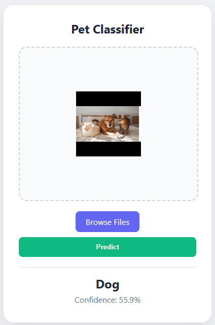
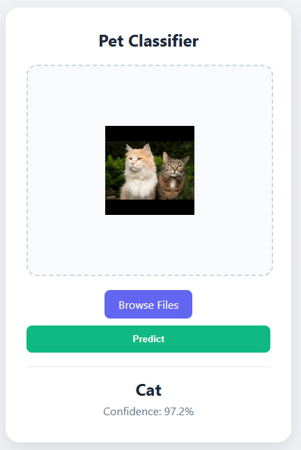
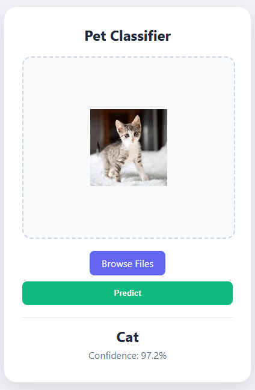
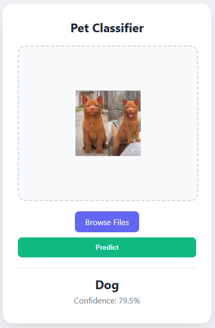
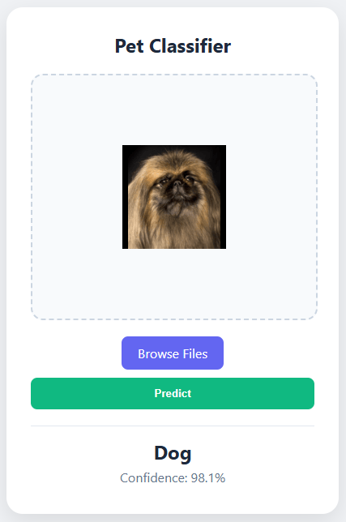
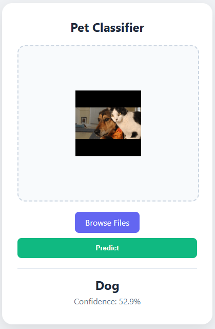

Finals - Lab Exercise 6 (Flask Web App Dogs vs. Cats Classifier)
Description: A full-stack deployment project transitioning the optimized Dogs vs. Cats Convolutional Neural Network into a fully functional, local web application using the Flask framework and TensorFlow Lite.
Objectives/Purpose:
- To serialize the trained Keras CNN into a lightweight TensorFlow Lite (
.tflite) format for efficient web deployment. - To build a Python-based Flask backend (
app.py) to handle HTTP requests, file uploads, and model inference. - To develop a responsive HTML frontend (
index.html) using Jinja templating to accept user image inputs and display predictions dynamically. - To implement robust server-side image preprocessing using PIL and NumPy to ensure uploaded images match the model's strict tensor requirements.
Key Features
- Lightweight TFLite Inference: Replaced the heavy, standard TensorFlow prediction pipeline with
tf.lite.Interpreter. This drastically reduced the application's memory footprint and improved inference speed, which is crucial for web servers. - Dynamic Frontend via Jinja2: Utilized Flask's rendering engine to conditionally display UI elements. The frontend seamlessly updates to show the uploaded image, the predicted label ("Dog" or "Cat"), and the confidence percentage without requiring complex JavaScript frameworks.
- Robust Image Preprocessing: Built a custom pipeline to catch and process messy user uploads. The application automatically converts images to RGB, forces the dimensions to match the model's training resolution, scales pixel values to
[0, 1], and expands the array into a batch tensor.
Important Code Blocks
1. Loading the TFLite Interpreter
Instead of loading a heavy .keras file, the backend initializes a TensorFlow Lite interpreter, allocating memory only for the required mathematical operations.
import tensorflow as tf
# Load TFLite Model
interpreter = tf.lite.Interpreter(model_path="model.tflite")
interpreter.allocate_tensors()
input_details = interpreter.get_input_details()
output_details = interpreter.get_output_details()2. Server-Side Image Preprocessing
This function ensures that regardless of what resolution or aspect ratio the user uploads, the image is mathematically transformed into the exact format the CNN expects.
from PIL import Image
import numpy as np
def preprocess_image(image_path):
img = Image.open(image_path).convert("RGB")
_, height, width, _ = input_details[0]['shape']
img = img.resize((width, height))
img_array = np.array(img).astype(np.float32) / 255.0
return np.expand_dims(img_array, axis=0)3. Handling the Prediction Logic
This block handles the `POST` request, runs the preprocessed tensor through the TFLite interpreter, and calculates the confidence score based on the model's Sigmoid output node.
# Predict
interpreter.set_tensor(input_details[0]['index'], input_data)
interpreter.invoke()
output = interpreter.get_tensor(output_details[0]['index'])[0]
# Handle Model Logic
if len(output) == 1:
conf = float(output[0])
prediction = "Cat" if conf > 0.5 else "Dog"
confidence = conf * 100 if conf > 0.5 else (1 - conf) * 100Screenshots & Results






Observations:
- The Flask integration successfully handled multiple consecutive file uploads, storing them temporarily via the
uuidmodule to prevent filename collisions, and accurately rendering the respective CNN predictions in the browser.
Tools & Technologies
- Languages: Python 3, HTML5, CSS3, JavaScript (Frontend file reading)
- Libraries/Frameworks: Flask (Web Framework), Jinja2 (Templating), TensorFlow Lite (Inference API), PIL (Image Processing), NumPy
- Platforms: Localhost Web Server
Challenges & Solutions
Problems Encountered: Moving from a Colab notebook to a web server introduces the problem of handling unpredictable user inputs. If a user uploaded an image with an Alpha channel (RGBA) or a massive 4K resolution, the model would crash because it expects a strict `(1, target_height, target_width, 3)` tensor.
How I Solved Them: I engineered a robust preprocess_image() pipeline. By utilizing the .convert("RGB") method from PIL, I stripped out any unexpected alpha channels. I then programmatically extracted the expected width and height directly from the input_details of the TFLite interpreter to guarantee the resizing logic would never mismatch the loaded model's architecture.
Learning Reflection
What I Learned: I bridged the significant gap between Data Science (model training) and Software Engineering (application deployment). I learned how web servers process multipart form data (file uploads) and how to securely route that data through a machine learning model backend to generate a real-time HTTP response.
Skills Gained: Python web framework architecture (Flask), server-side image preprocessing, model serialization with TFLite, and dynamic HTML templating with Jinja2.